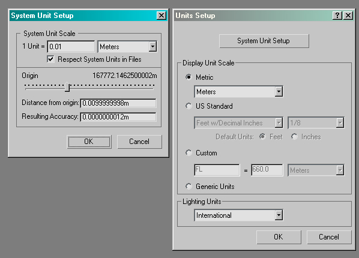
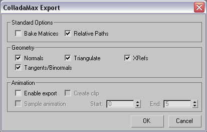
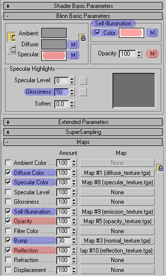
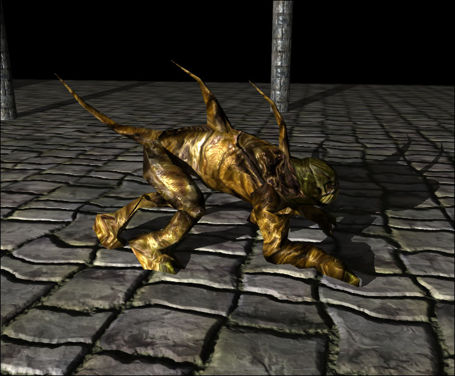
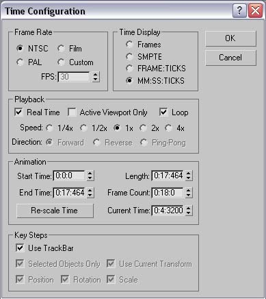

Autodesk 3ds Max
From C4 Engine Wiki
| Content Creation Tools | |
 Index | |
| Autodesk 3ds Max | Autodesk Maya |
| Autodesk MotionBuilder | Softimage XSI |
| Carrara | DAZ Studio |
| Milkshape 3D | Blender 3D |
| Caligari TrueSpace | Cinema 4D |
| Cheetah 3D | Houdini Escape |
| Wings 3D | DeleD |
| Poser Pro | modo |
| LightWave 3D | Ultimate Unwrap 3D |
| See also Collada Plugins | |
| Autodesk 3ds Max | ||
| | ||
| Website: | Autodesk 3ds Max | |
|---|---|---|
| Feeling Collada Plugin: | Feeling Software | |
| Autodesk FBX/COLLADA Plugin: | Autodesk FBX/COLLADA Plugin | |
| Animation: | Yes | |
| Current Version: | 3ds Max 2008 | 3ds Max 2009 and 2010 for FBX/COLLADA |
| Price: | $3495 | |
Contents |
Collada Max Plugin
The Collada plugin for 3ds Max is currently being developed by Feeling Software. You will need to register and create an account with Feeling Software before being able to download from their site. The plugins are available from the downloads section.
The current version of the 3ds Max Collada plugin is 3.04E, released September 14th 2007.
Because Feeling Software stopped developing the plug-in (Sony and/or Khronos stopped paying them to do it), it is now open source, and evolves slowly. An alternative COLLADA exporter is provided by Autodesk as part of the FBX plug-in for 3ds Max and Maya. The good part about that plug-in is that it is constantly updated with new versions of 3ds Max (2009, 2010, and x64 versions included). The bad part is that it has historically had trickier bugs than the Feeling plug-in. More recently the OpenCollada project develops plugins, in collaboration with Marcus Barnes, one of the fathers of COLLADA. You can download the Max and Maya plugins from http://opencollada.org. For source code and feedback visit http://opencollada.googlecode.com
Requirements
To install ColladaMax, you will need 3ds Max 9, 3ds Max 8 or 3ds Max 7 SP1 (Service pack 1). Service packs for 3ds Max can be downloaded from the Autodesk support website. Make sure to install the right service pack for your system language. Note that service packs are not compatible with the debug builds of 3ds Max.
ColladaMax does not rely anymore on external libraries. The installer you download from Feeling Software should set-up everything correctly and will delete Autodesk's own COLLADA plug-in.
Installation
The installation of ColladaMax is automatic using the Feeling Software installer.
System Scale
The following picture shows you how to configure 3ds Max in order to model at the default C4 scale:

Exporting
Needs to be expanded
Export Options
The ColladaMax exporter provides a number of options, which are detailed in this section. The options can be modified from the export UI or by editing the ColladaMax.ini file located in the 3dsmax[7,8,9]/plugcfg/ folder. This configuration file is loaded in before every export, and saved to when the user clicks OK in the export options dialog. This configuration file is particularly useful when automating exports, to set per-scene options.

Standard Options
- Bake Matrices: The transforms of each scene node and their animations will be exported as matrices. This is used mostly for interoperability, e.g. with another DCC tool. Note that Bipeds automatically have their matrices baked.
- Relative Paths: Whether the absolute or relative file path will be written to the COLLADA document. Mostly impacts texture and shader filenames.
Geometry
- Normals: Whether to export the normals of meshes.
- Triangles: Whether to export the tessellation of a mesh as triangles or N-sided polygons. In the COLLADA document, this will generate either the <triangles> or the <polylist> element. Since 3ds Max doesn’t support holes, the 3ds Max exporter will never write the <polygons> element. It is recommended to keep this option on, as N-sided polygon export is still experimental.
- XRefs: Whether externally referenced meshes will be exported as external references. If this option is checked off, they will simply be dropped.
- Tangents/Binormals: Exports the texture tangents and binormals for all given map channels of meshes, as well as their indices within the mesh tessellation.
Animation
- Sample animation: Enables time-sampling the animated parameters, within the Start and End time interval. One sample is taken per time unit. If this option is disabled, ColladaMax will attempt to export the animated parameters as key-frames. Animated bipeds or objects involving IK are automatically sampled, since COLLADA doesn’t have direct support for these features yet.
- Single <animation>: Whether the <animation> elements within the exported COLLADA document will be placed under a single root <animation> element, named after the scene. This is especially useful when exporting animation clips for 3dsMax 7.
- Create Clip: After all the animations are exported, one animation clip will be created to hold these animations.
Materials
Here are the 3ds Max materials that are currently identified by C4:
- Blue highlight = Identified
- Red highlight = Not Identified

- Self-Illumination and Specular colors are currently ignored. These values are easily configured within C4's material manager.
- Opacity and Reflection maps are currently ignored - these must be specified within C4's material manager.
- A Self-Illumination map is called an Emission map in C4.
- A Reflection map is called an Environment map in C4.
Sample Files
The following download contains sample files for a fully animated, skinned, biped character as well as a simple 6-textured cube. 3ds Max, Collada and texture files are all included.
Download the file here C4_Max_Examples.rar (2.82 MB)

Importing into C4
Needs to be expanded
- Export any Collada files to the C4/Import/dae directory. If your file contains animations export the root file to this directory, then create a sub-folder of the same name and place all animation files in there.
- Start C4 and open a new world
- Select World -> Import Scene and select your Collada file
- Use the material manager to apply/adjust any assigned materials
- Select World -> Export Model
- Use the model viewer to import in animations
Tips & Tricks
Scaling a Biped object
Needs to be expanded
- Select the characters mesh.
- Turn off the checkbox "Always Deform" in the skin-modifier (Modify -> Skin -> Advanced Parameters rollout).
- Rescale the character.
- Select all of the characters bones.
- Change into figure mode (Motion -> Biped rollout).
- Change the scale of the selected bones in the same ratio with that you have scaled the characters mesh earlier.
- Turn off figure mode.
- Turn on "always deform" again.
Rotating a Biped object
Needs to be expanded
- Select the Bip01 Bone
- Open the Motion tab
- In the Biped Rollout, select "Move All Mode"
- Rotate the character
- Select "Collapse" from the "Bip01 Offset" window
- Close the "Bip01 Offset" window
- Turn off "Move All Mode"
Converting Animation Frames to Milliseconds
The C4 interpolator is time based and uses milliseconds. Here is an example of how to convert an animation frame number in 3ds Max to milliseconds.

In this example we are at frame #140
- Click the Time Configuration button
- For the Time Display select MM:SS:TICKS
- Use the value from the Current Time field. In the picture above it is 0:4:3200
- Max uses 4800 ticks per second. Thus, to convert ticks to milliseconds, you divide by 4.8. There are 1000 milliseconds in a second.
- 4:3200 == 4 seconds 3200/4.8 milliseconds == 4 seconds 667 milliseconds == 4667 milliseconds.
Resetting the Transform
- Check your transforms, especially before animating! Make sure your transforms are clean. There are several ways to do this, using the xForm modifier (not advised) or using the box trick. There is a script available that easily automates the box trick. Download the script here.
- The biggest problem with the Box Trick is that it may make your mesh lose its material assignments, depending on how you tech the box and the mesh before attaching the mesh to the box. An alternative is to use the "Collapse" utility on the Utilities roll-out panel, and select "Collapse to: Single Mesh" (do not check the "boolean" option).
- Use Bone Tools in the Animation menu to make sure that scale/shear is re-set on all your bones before you attach the bones to your Skin or Physique modifier.
Scaling Bones
If you have scaled the bones of a skinned, animated character, the following steps must be taken in 3ds Max in order for the mesh to successfully import into the C4 Engine.
- Before exporting the model, in Animation -> Bone Tools, select 'Reset Stretch' and 'Reset Scale' for the scaled bones.
- In the export menu (the one from Autodesk) you need to select 'Deformations' and 'Skin' in the Deformations tab.
Additional Information
- The C4 demo game module expects characters to be facing the +x axis as opposed to -y which is the default for 3ds Max.
- Both the "Skin" and "Physique" modifiers are supported.
- C4 uses a stencil shadow algorithm therefore meshes need to be closed and not contain any open edges. Models have to be closed triangle meshes. This means that every edge in the model must only be shared by 2 triangles thus disallowing any holes that would expose the interior of the model. You can use the "STL Check" modifier to check for any open edges.
- Please see Creating a Model and Model Viewer Overview for further information regarding working with imported models and C4.
Known Problems and Limitations with the Collada exporter
- Not all material settings identified by C4
- There is no support for COLLADA Physics yet.
- The support for ColladaFX is still very experimental.